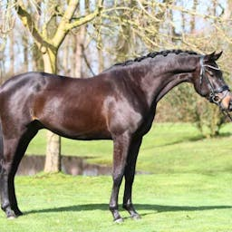

Vi är ett företag som specialiserar oss på att skapa avancerade
HTML-hemsidor med fokus på semantiska element och tillgänglighet. Och som älskar djur.
Tjänster
Du måste skriv in din ålder för att se våra kurser. Användare under 18 år måste ha föräldrars tillstånd.
Webbdesign
Webbutveckling
Tillgänglighetsoptimering
Hästar
Hästar (Equus) är det enda nu levande släktet inom familjen hästdjur (Equidae). Hästar är medelstora
däggdjur
med avlångt huvud och förhållandevis lång hals med man. De har långa smala ben
och står på en tå som skyddas av en hornartad hov. De har lång svans som antingen avslutas med en tofs eller
som helt är täckt med böljande hår, så kallat tagel.

The horse
Hundar
Hund (Canis lupus familiaris eller Canis lupus domesticus,[1] tidigare även Canis familiaris) är en
domesticerad underart av varg (Canis lupus). Hundar finns av många olika raser, vilka framavlats av
människan
sedan hunden domesticerades.
The dog
Katter
Katt (felis catus) är ett relativt litet, smygjagande rovdjur i familjen kattdjur och ett vanligt
sällskapsdjur i stora delar av världen. Falbkatten (felis silvestris lybica), en underart till vildkatten
(felis silvestris), blev tidigt domesticerad av människan som nyttodjur för att hålla efter skadedjur eller
för sällskap, både på landet och i stadsmiljö.